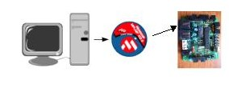

| Métodos de grabación de la SkyPic |

Introducción
El objetivo de este manual es mostrar los métodos que existen para poder descargar/grabar los programas que hagamos a nuestra placa SkyPic.
Los métodos descritos en esta página son principalmente para el sistema operativo Windows™ ya que es el más extendido.
También para quien desee usar Linux casi todos los métodos tienen su equivalente.
Métodos de grabación de la SkyPic
- Usando el BootLoader
- Usando el programador ICD2
- Usando el puerto paralelo
- Usando otra SkyPic como programadora
- Usando un programador genérico
Descripción de los métodos de grabación
1.- Usando el BootLoader
Para poder usar este método, la SkyPic debe tener grabado el programa BootLoader que será el encargado de obtener nuestro programa y grabarlo en la memoria del microcontrolador.
Si no se tiene grabado el BootLoader, se puede usar cualquiera de los métodos siguientes para grabarlo.
Para descargar nuestros programas compilados usaremos el cargador PIC Downloader desarrollado por Shane Tolmie, la instalación del PIC Downloader es sencilla tan sólo es necesario descargarlo desde la web PIC_downloader.zip descomprimirlo en el directorio deseado y ejecutar directamente el fichero PIC_downloader.exe.
Para configurarlo marcamos el puerto serie que usemos, seleccionamos la velocidad del puerto a 38400 baudios. Con el botón Search seleccionamos el archivo .hex que deseamos grabar.
Aquí puede ver una captura del programa:

Una vez que ya tengamos configurados todos los parámetros y seleccionado el fichero .hex pulsamos el botón
Write, el programa nos pedirá que pulsemos el botón
reset de la SkyPic. Una vez terminada la grabación, el programa nos indicará si la grabación se ha realizado con éxito o si por el contrario se han producido un error.
2.- Usando el programador ICD2
Para usar este método necesitamos disponer del programador ICD2 de Microchip un PC con un puerto USB disponible y tener el programa MPLAB instalado. Toda la información sobre la descarga, instalación y configuración se puede obtener de la web del fabricante.
Aquí mostraremos los pasos necesarios para grabar una SkyPic, no entraremos en como se realizan los programas al ser bastante extenso y quedar fuera del ámbito de este manual.
Conexionado de los dispositivos
Entorno MPLAB
Con el MPLAB tenemos dos opciones trabajar con todo el entorno, esto incluye tanto la escritura, compilación o ensamblado del código y posterior grabación o usarlo únicamente para grabar un programa ya compilado o ensamblado.
Slección y configuración del entorno y programador
- Seleccionamos como programador "MPLAB ICD 2".
- Bits de configuración:
- Oscilador = HS
- Watchdog Timer = Off
- Power Up Timer = Off
- Brown Out Detect = Off
- Low Voltage Program = Disabled
- Flash Program Write = Write Protection Off
- Data EE Read Protect = Off
- Code Project = Off
3.- Usando el puerto paralelo
Si no se puede usar ningún método de los dos métodos anteriores se puede usar el puerto paralelo de PC y el software ICProg como se describe en los siguientes dos documentos:
4.- Usando otra SkyPic como programadora
Con este método necesitaremos otra SkyPic que debe tener grabado el servidor PICP.
En el siguiente enlace se describe todo el proceso de grabación de este método
5.- Usando un programador genérico
Estos programadores normalmente están disennados para insertar el microcontrador en el programador retirándolo de la placa controladora, en nuestro caso la SkyPic.
Para no tener que realizar esta operación un tanto engorrosa, podemos hacernos un cable de tipo telefónico que en un extremo pondremos una clavija de teléfono y en el otro extremo conectaremos los pines de programación que dispone el programador.
Esta opción no está documentada ya que depende de cada programador, pero al disponer de los esquemas eléctricos de la SkyPic no es demasiado complejo de realizar.
Links
Autor
Licencia
Este
documento se distribuyen bajo
licencia FDL por lo que se permite su copia, modificación y distribución, siempre y cuando se mantenga esta nota.
Noticias
- 23/dic/2005: Publicado enlace en esta web
IEA ROBOTICS
Página creada por
Ricardo Gómez González
{kind=link}